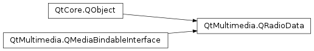

QRadioData¶
Synopsis¶
Functions¶
- def
availability() - def
error() - def
errorString() - def
isAlternativeFrequenciesEnabled() - def
programType() - def
programTypeName() - def
radioText() - def
stationId() - def
stationName()
Slots¶
- def
setAlternativeFrequenciesEnabled(enabled)
Signals¶
- def
alternativeFrequenciesEnabledChanged(enabled) - def
error(error) - def
programTypeChanged(programType) - def
programTypeNameChanged(programTypeName) - def
radioTextChanged(radioText) - def
stationIdChanged(stationId) - def
stationNameChanged(stationName)
Detailed Description¶
The
PySide2.QtMultimedia.QRadioDataclass provides interfaces to the RDS functionality of the system radio.The radio data object will emit signals for any changes in radio data. You can enable or disable alternative frequency with
PySide2.QtMultimedia.QRadioData.setAlternativeFrequenciesEnabled().You can get a
PySide2.QtMultimedia.QRadioDatainstance fromt thePySide2.QtMultimedia.QRadioTuner.radioData()property from aPySide2.QtMultimedia.QRadioTunerinstance.radio = new QRadioTuner; radioData = radio->radioData();Alternatively, you can pass an instance of
PySide2.QtMultimedia.QRadioTunerto the constructor toPySide2.QtMultimedia.QRadioData.See also
-
class
PySide2.QtMultimedia.QRadioData(mediaObject[, parent=nullptr])¶ Parameters: - mediaObject –
PySide2.QtMultimedia.QMediaObject - parent –
PySide2.QtCore.QObject
Constructs a radio data based on a
mediaObjectandparent.The
mediaObjectshould be an instance ofPySide2.QtMultimedia.QRadioTuner. It is preferable to use thePySide2.QtMultimedia.QRadioTuner.radioData()property on aPySide2.QtMultimedia.QRadioTunerinstance to get an instance ofPySide2.QtMultimedia.QRadioData.During construction, this class is bound to the
mediaObjectusing thePySide2.QtMultimedia.QMediaObject.bind()method.- mediaObject –
-
PySide2.QtMultimedia.QRadioData.Error¶ Enumerates radio data error conditions.
Constant Description QRadioData.NoError No errors have occurred. QRadioData.ResourceError There is no radio service available. QRadioData.OpenError Unable to open radio device. QRadioData.OutOfRangeError An attempt to set a frequency or band that is not supported by radio device.
-
PySide2.QtMultimedia.QRadioData.ProgramType¶ This property holds the type of the currently playing program as transmitted by the radio station. The value can be any one of the values defined in the table below.
Constant Description QRadioData.Undefined QRadioData.News QRadioData.CurrentAffairs QRadioData.Information QRadioData.Sport QRadioData.Education QRadioData.Drama QRadioData.Culture QRadioData.Science QRadioData.Varied QRadioData.PopMusic QRadioData.RockMusic QRadioData.EasyListening QRadioData.LightClassical QRadioData.SeriousClassical QRadioData.OtherMusic QRadioData.Weather QRadioData.Finance QRadioData.ChildrensProgrammes QRadioData.SocialAffairs QRadioData.Religion QRadioData.PhoneIn QRadioData.Travel QRadioData.Leisure QRadioData.JazzMusic QRadioData.CountryMusic QRadioData.NationalMusic QRadioData.OldiesMusic QRadioData.FolkMusic QRadioData.Documentary QRadioData.AlarmTest QRadioData.Alarm QRadioData.Talk QRadioData.ClassicRock QRadioData.AdultHits QRadioData.SoftRock QRadioData.Top40 QRadioData.Soft QRadioData.Nostalgia QRadioData.Classical QRadioData.RhythmAndBlues QRadioData.SoftRhythmAndBlues QRadioData.Language QRadioData.ReligiousMusic QRadioData.ReligiousTalk QRadioData.Personality QRadioData.Public QRadioData.College
-
PySide2.QtMultimedia.QRadioData.alternativeFrequenciesEnabledChanged(enabled)¶ Parameters: enabled – PySide2.QtCore.bool
-
PySide2.QtMultimedia.QRadioData.availability()¶ Return type: PySide2.QtMultimedia.QMultimedia.AvailabilityStatusReturns the availability of the radio data service.
A long as there is a media service which provides radio functionality, then the
availabilitywill be that of theradio tuner.
-
PySide2.QtMultimedia.QRadioData.error(error)¶ Parameters: error – PySide2.QtMultimedia.QRadioData.Error
-
PySide2.QtMultimedia.QRadioData.error() Return type: PySide2.QtMultimedia.QRadioData.ErrorReturns the error state of a radio data.
-
PySide2.QtMultimedia.QRadioData.errorString()¶ Return type: unicode Returns a description of a radio data’s error state.
-
PySide2.QtMultimedia.QRadioData.isAlternativeFrequenciesEnabled()¶ Return type: PySide2.QtCore.bool
-
PySide2.QtMultimedia.QRadioData.programType()¶ Return type: PySide2.QtMultimedia.QRadioData.ProgramType
-
PySide2.QtMultimedia.QRadioData.programTypeChanged(programType)¶ Parameters: programType – PySide2.QtMultimedia.QRadioData.ProgramType
-
PySide2.QtMultimedia.QRadioData.programTypeName()¶ Return type: unicode
-
PySide2.QtMultimedia.QRadioData.programTypeNameChanged(programTypeName)¶ Parameters: programTypeName – unicode
-
PySide2.QtMultimedia.QRadioData.radioText()¶ Return type: unicode
-
PySide2.QtMultimedia.QRadioData.radioTextChanged(radioText)¶ Parameters: radioText – unicode
-
PySide2.QtMultimedia.QRadioData.setAlternativeFrequenciesEnabled(enabled)¶ Parameters: enabled – PySide2.QtCore.bool
-
PySide2.QtMultimedia.QRadioData.stationId()¶ Return type: unicode
-
PySide2.QtMultimedia.QRadioData.stationIdChanged(stationId)¶ Parameters: stationId – unicode
-
PySide2.QtMultimedia.QRadioData.stationName()¶ Return type: unicode
-
PySide2.QtMultimedia.QRadioData.stationNameChanged(stationName)¶ Parameters: stationName – unicode
© 2018 The Qt Company Ltd. Documentation contributions included herein are the copyrights of their respective owners. The documentation provided herein is licensed under the terms of the GNU Free Documentation License version 1.3 as published by the Free Software Foundation. Qt and respective logos are trademarks of The Qt Company Ltd. in Finland and/or other countries worldwide. All other trademarks are property of their respective owners.